Oyodo, Nara: things to do, food and stays
Oyodo · Nara
Oyodo
Highlighted on the Nara map.

Stay
宿処 秀
Yado Tokoro Shu
Inn in Tsuchida, Oyodo with room-only plans.
松月館
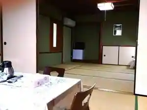
Matsuzuki Kan
Dining
ラ・ペッシュ
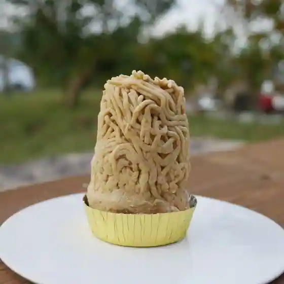
Ra Pesshu
ミッツ
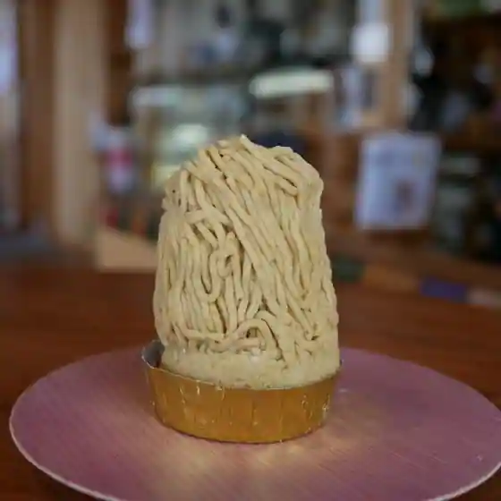
Mittsu
来来飯店 大淀店
Rairai Meshi Oyodo
ヴィンテージ
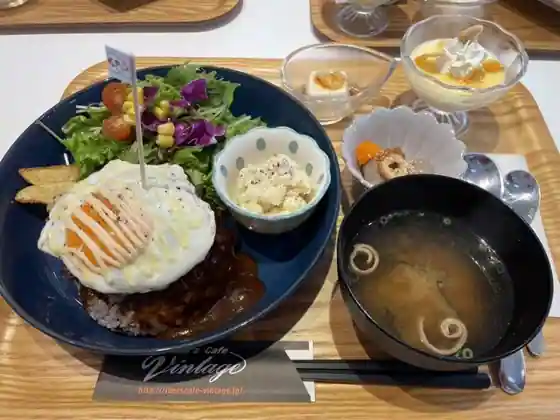
Vinteji
よしなや
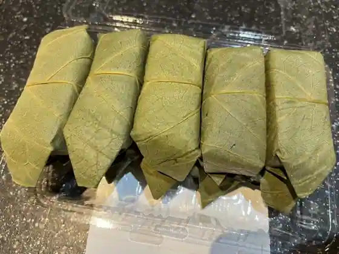
Yoshinaya
多羅福村
Tara Fukumura
うどんカフェ 三和
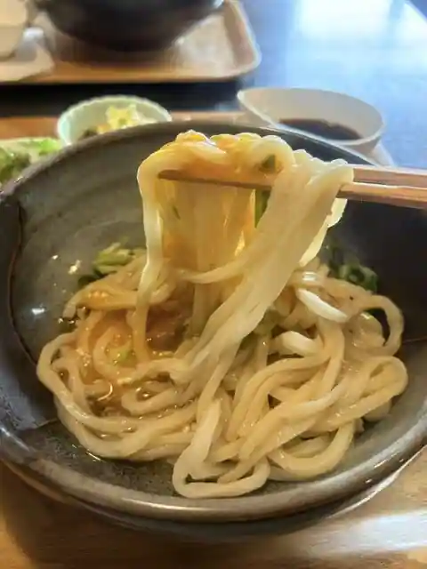
Udon Cafe Sanwa
道の駅 吉野路大淀iセンター
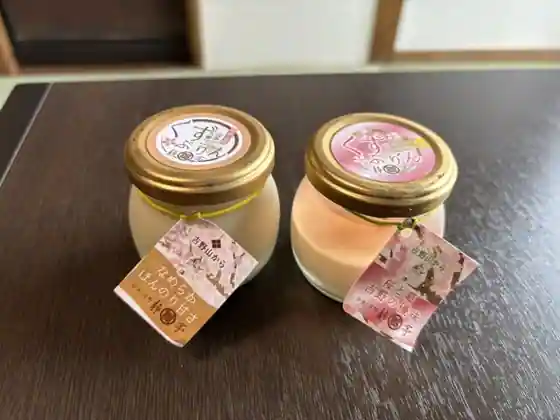
Michi No Eki Yoshino Michi Oyodo i Center
花吉野カンツリー倶楽部 レストラン
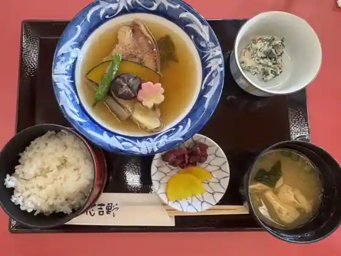
Hana Yoshino Kantsuri Kurabu Restaurant
やまぶき
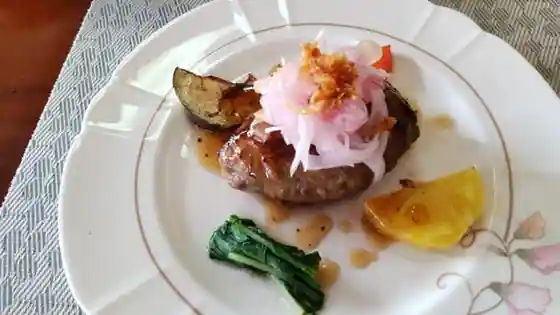
Yamabuki
レストランときん
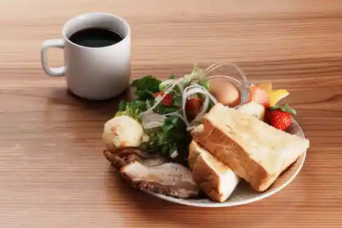
Restaurant Tokin
和好寿司
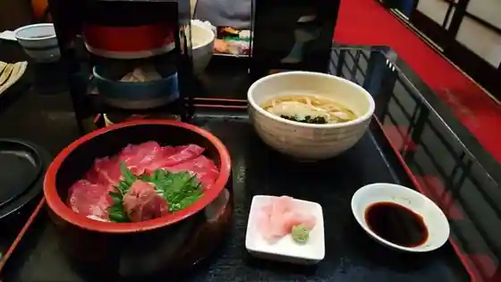
Kazuyoshi Sushi
カフェ ドゥ ルーエ
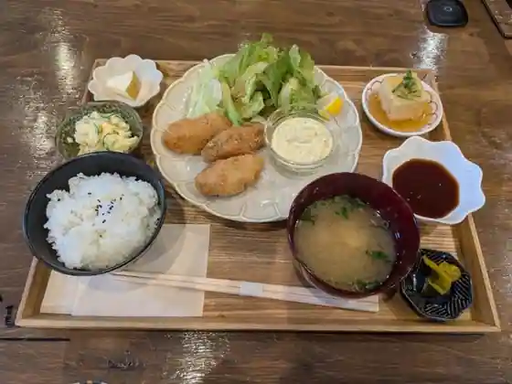
Cafe Dou Rue
MARUIKE Cafe
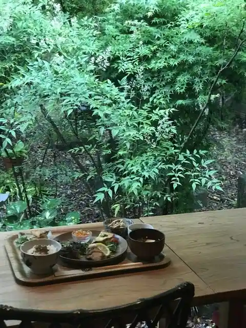
MARUIKE Cafe
ラーメン ならの
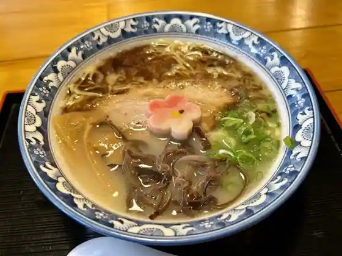
Ramen Narano
亀久堂
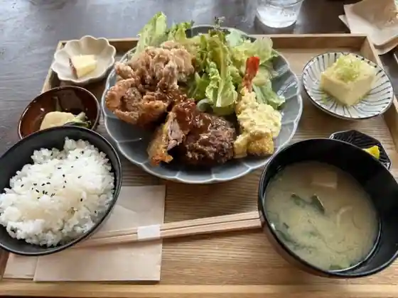
Kamehisa Do
自然の里レストラン 大淀店
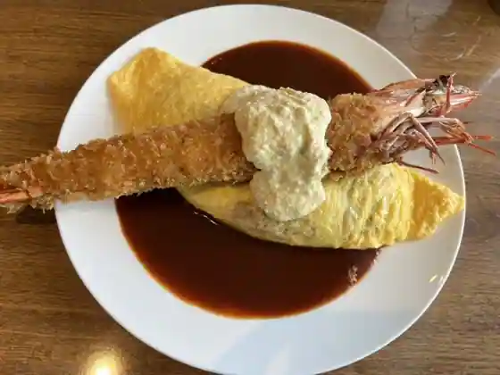
Shizen No Sato Restaurant Oyodo
手打うどん まるいち
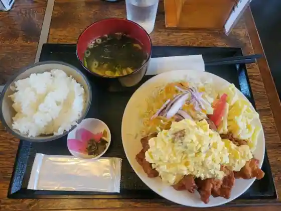
Teuchi Udon Maruichi
御食事処 トライ
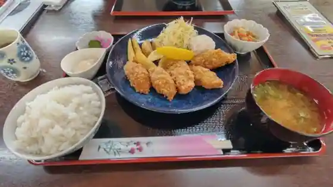
Mike Koto Tokoro Torai
焼肉 肉匠
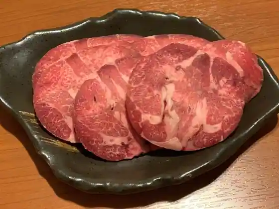
Yakiniku Niku Takumi
クロスポット
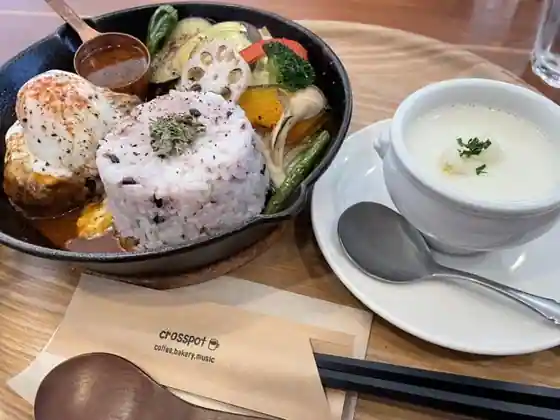
Kurosupotto
南和炊飯処
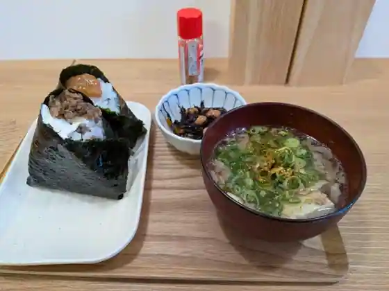
Minami Wa Suihan Tokoro
奈良ロイヤルゴルフクラブ レストラン
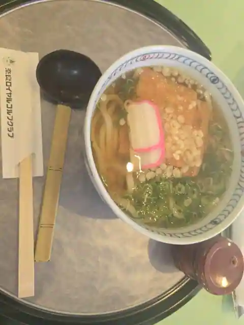
Nara Roiyarugorufukurabu Restaurant
小紋
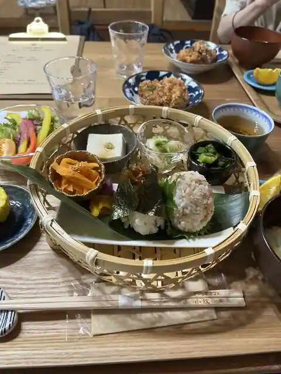
Komon
Sights
Seson Tera
Hiroshi Mizu Sono

Yoshinogawa (Oyodo Ryuiki)

Oyodo Culture Hall

Daia Ta Kogen Rien

Roadside Station Yoshino Michi Oyodo i Center